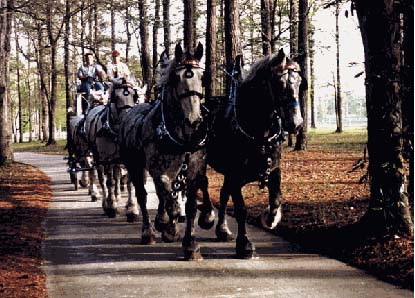

The Lone Star Hitch is an
experience of a day when freight was moved by real "horse power". Consisting
of Percheron draft horses and a refurbished 19th century freight wagon,
the Hitch was assembled to educate and entertain as well as draw attention
to our sponsoring company.

Percherons, native to France, were imported into the U.S. in the 1830's because of their ability to withstand the demands street and farm work placed on horses. Until World War II, these draft horses were regularly used to haul freight and goods from town to town and across the country. As modern day America depends on large trucks to move freight, in the past America relied on these gentle giants to transport everything from grain to furniture throughout the US.
email jeniferkey@draftymanor.com for web site questions or suggestions